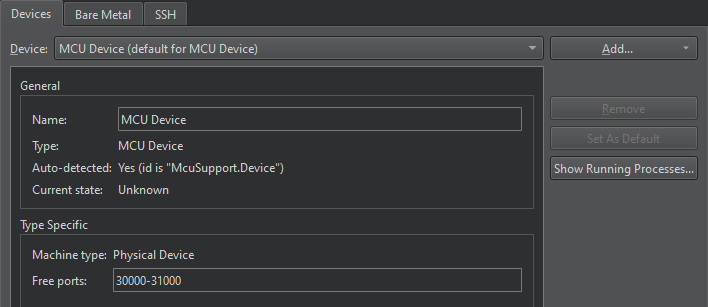

Add MCU devices
Note: Before you start developing for MCUs, go to Help > About Plugins, and make sure you have the Qt for MCUs plugin enabled.
Qt Creator automatically adds a default MCU device when you select Apply in Preferences > SDKs > MCU after adding an SDK.

To add MCU devices, go to Preferences > Devices > Add > Start Wizard to Add Device > MCU Device:
- In Name, give the device a name.
- Select Apply to add the device.
See also Enable and disable plugins, How To: Develop for MCUs, and Developing for MCUs.